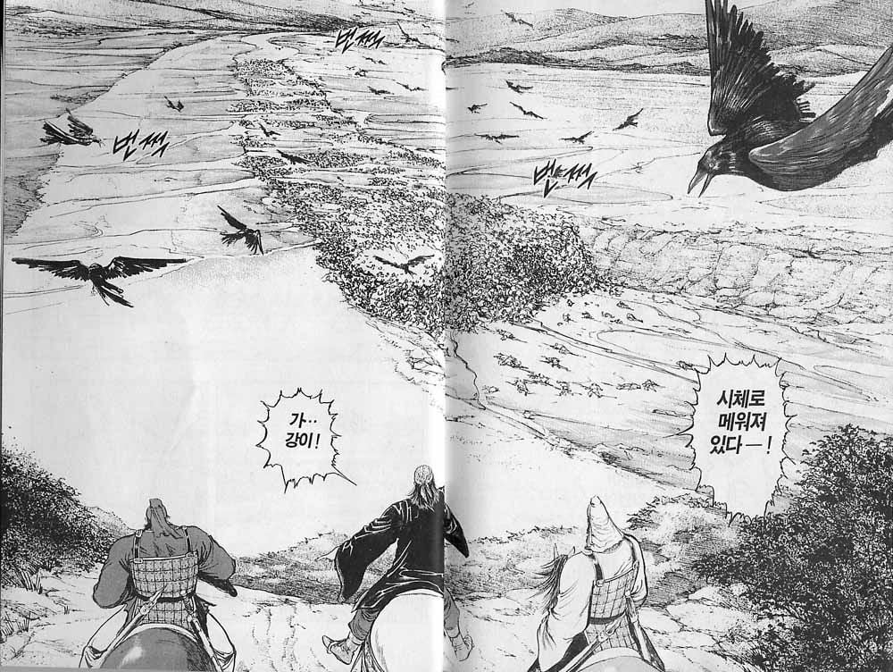
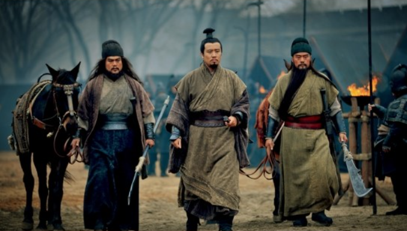

제갈량은 서주 낭야군 출신임.

제갈량 가족의 형주 이주 시기가 딱 이 때임. 변란 전 후가 아닌 변란 와중에 저 꼴을 다 보고 내려온거(194년)
"본주(서주)가 뒤집혀 백성들이 죽어 없어지는 참상을 겪고, 조상의 무덤을 버린 채 늙은이와 어린아이를 이끌고 피난했습니다." (遭本州傾覆, 生類殄盡, 棄墳墓, 攜老弱, 披草萊, 歸聖化)
제갈근전 - 손권에게 쓴 편지 중.

+ 좆소 3인방이 쳐들어 와서는
"조조 좆같지 않냐? 아니야? 죽을래?" 하면서 협박함
+ 유비의 아갈풍둔술
"27살 엠지가 세상이 돌아가는게 뭘아냐? 대기업에 가서 평범하게 직장생활하다 끝나는거 보다
튼튼한 중견기업에서 같이 성장하는게 맞다 아이가?!"
어이 와룡이 나랑 한타 할꺼야 안할꺼야!